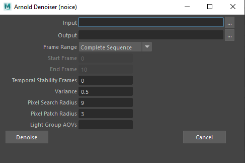
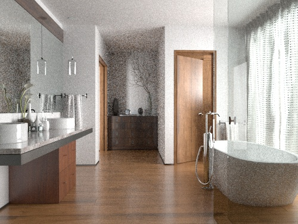
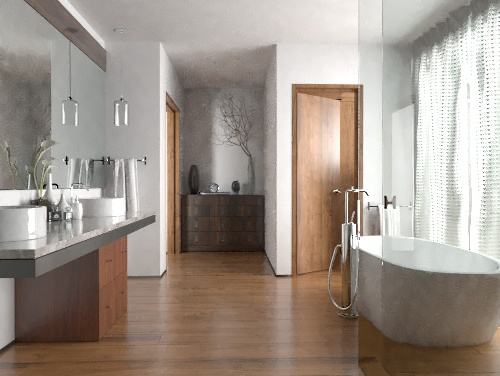
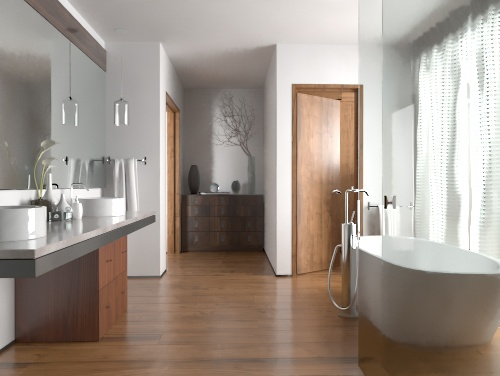

Arnold 降噪器(Arnold Denoiser)
渲染单帧时，请使用 imager_denoiser_noice。

Arnold 降噪器是独立的程序后处理降噪器可执行文件。它可处理具有多个层（合并）的 EXR 文件，并输出含有降噪层的 EXR 文件。它会考虑多个帧和多个灯光 AOV。与大多数降噪器相同的是，Arnold 降噪器考虑当前像素的相邻面片，并查找给定搜索区域内的类似相邻面片以便混合在一起。要使用 Arnold 降噪器，您需要通过 Arnold EXR 驱动程序渲染图像。
- Noice 可以使用 gaussian_filter 或 box_filter，并设置可能需要的任何其他过滤器。
- 有关降噪教程，请单击此处。
要下载演示（使用灯光组 AOV）降噪的场景文件，请单击此处。
Arnold 降噪器要求在“渲染设置”(Render Settings)的“AOV”(AOVs)选项卡中启用参数“输出方差 AOV”(Output Variance AOVs)（输出降噪 AOV(Output Denoising AOVs)）。
工作流如下所示：
- 转到 AOV(AOVs)选项卡，并在“降噪器 > Arnold 降噪器”(Denoiser > Arnold Denoiser)下选择“输出降噪 AOV”(Output Denoising AOVs)。这将自动生成 Arnold 降噪器所需的法线、深度和反照率 AOV。
- 在 Arnold 渲染设置(Render Settings)的“公用”(Common)选项卡中启用“合并 AOV”(Merge AOVs)，并确保渲染为 EXR。
- 批渲染场景或使用“渲染序列”(Render Sequence)窗口渲染出 EXR 文件（从 Arnold 渲染视图窗口保存将不起作用）。您应该会在项目的 Images 文件夹中看到相应文件。
- 转到“Arnold > 工具 > Arnold 降噪器 (noice)”(Arnold > Utilities > Arnold Denoiser (noice)) 以打开降噪窗口。
- 在“输入”(Input)中选择渲染的 EXR 图像。然后，它会自动添加带有“_denoised”后缀的“输出”(Output)路径。
- 选择是要对单个帧还是帧序列进行降噪，然后选择“降噪”(Denoise)。系统将根据您选择的设置开始降噪处理过程。
您可以在脚本编辑器窗口中查看任何“noice”日志消息。
输入(Input)
要降噪的图像或图像序列的路径。
输出(Output)
设置降噪输出文件路径。输出文件将包含与原始层同名的降噪层。对于每个文件，将保存一个新文件，后缀为“_denoised”（降噪图像）。
请注意，文件输出大小不同于输入文件，因为只保存了主 RGBA 层（没有保存辅助 AOV）。
帧范围(Frame Range)
选择渲染完整序列、单个帧或帧范围（例如 1 到 10）。
完整序列(Complete Sequence)：对给定图像序列的所有帧进行降噪。
单个帧(Single Frame)：仅对图像序列的单个帧（在“开始帧”(Start Frame)中指定）进行降噪。
开始/结束帧范围(Start/End Frame Range)：对“开始帧”(Start Frame)和“结束帧”(End Frame)中指定的给定帧范围进行降噪。
开始帧(Start Frame)
设置序列起始值。
结束帧(End Frame)
设置序列结束值。
时间稳定性帧(Temporal Stability Frames)
用于时间稳定性的额外图像的数量。可以指定多个附加帧来提高时间稳定性（例如 render001.exr, render002.exr, render003.exr）。
方差(Variance)
过滤器的强度取决于方差参数，方差值越大，降噪效果越好。对于方差，可以设置为最小值 0.25、默认值 0.5、最大值 0.75。noice 在去除噪波时的积极程度可以通过使用命令行参数 -variance (-v) 设置方差阈值进行控制。默认值为 0.5，值越高，会认为类似相邻面片的颜色差异越大，从而使降噪更为积极。
|  |  | |
| 未使用降噪 | 0.25 | 0.5（默认值） |
像素搜索半径
这是可以找到类似相邻面片的区域。值越高越好，但会增加降噪成本。对于每个像素，noice 将按照使用命令行参数 -searchradius (-sr) 设置的半径搜索方形区域。此区域越大，降噪稳定性越强，找到类似相邻面片的机会也越大。默认值为 9，将提供 19x19 方形相邻面片。如果将其设置为 21（42x42 的搜索窗口），将看到相当于加载 5 个帧的像素区域。
|  | ||
| 6 | 9（默认值） | 18 |
像素面片半径(Pixel Patch Radius)
这将提高降噪的柔和度（同时始终保留要素）。默认值为 3（在较大的一侧），但也可以使用较低值 0 或 1、中间值 3 以及较高值 5。
对于每个像素，noice 将考虑其相邻面片并查找具有类似相邻面片的其他像素。此相邻面片的半径可以由 -patchradius（或 -pr）命令行参数控制。默认值设置为 3，将提供 7x7 方形相邻面片。
 |
||
| 未使用降噪 | 1 | 3（默认值） |
灯光组 AOV(Light Group AOVs)
可以指定要共同降噪的附加灯光 AOV。
自动检测线程(Autodetect Threads)
定义要使用的线程数量。默认情况下，保持一个线程可用，以便在降噪时不会使您的计算机“冻结”。
降噪(Denoise)
设置降噪的最后一步。在日志区域中，您会注意到为所选范围内的所有文件调用了 noice.exe。